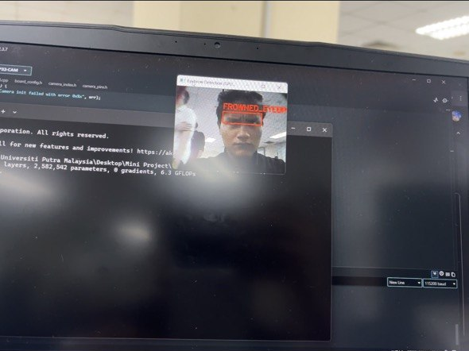
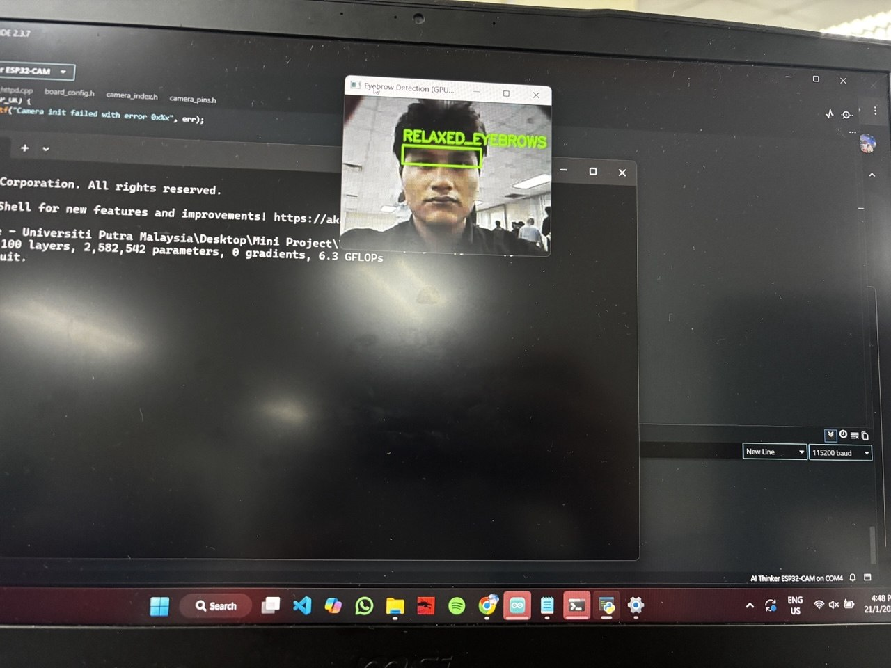
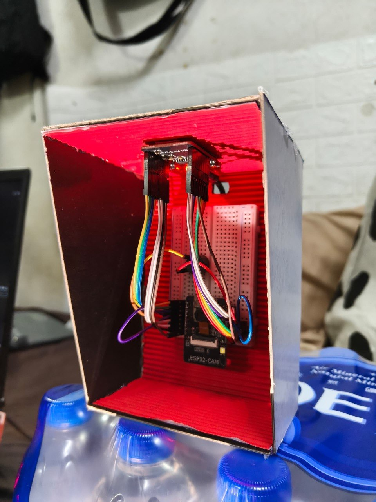
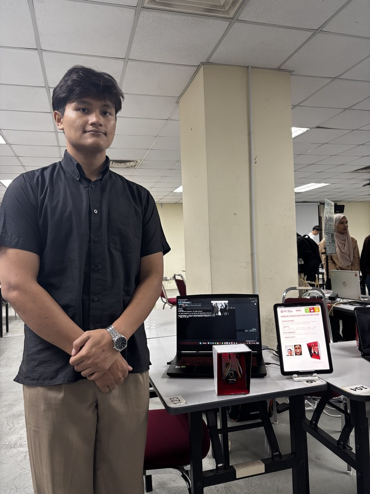
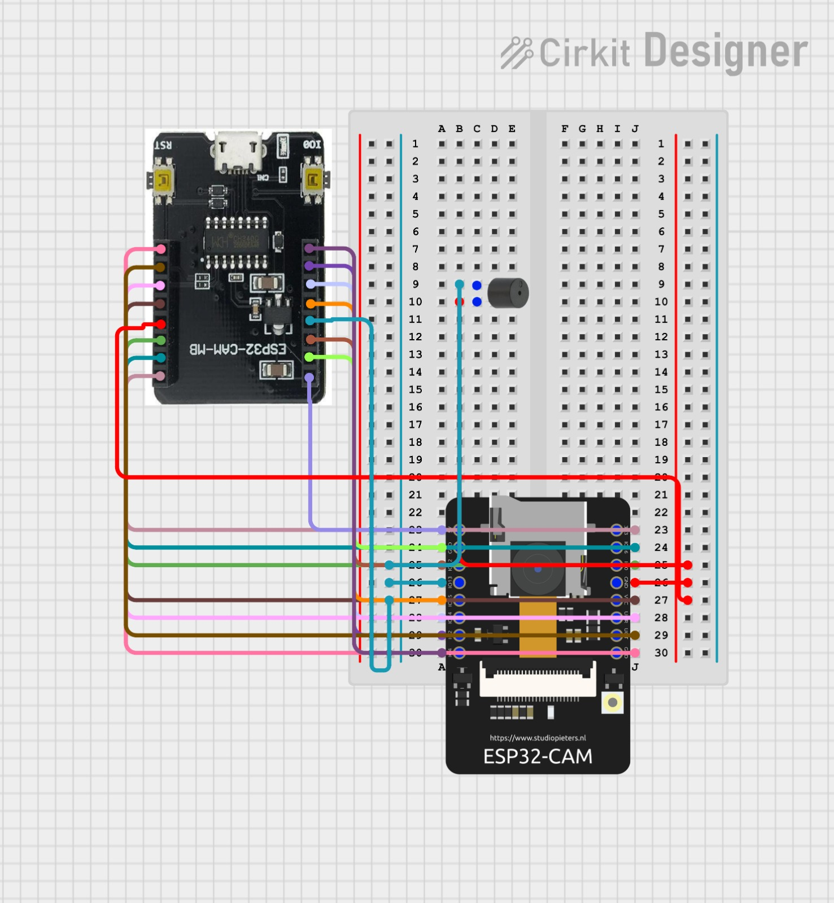
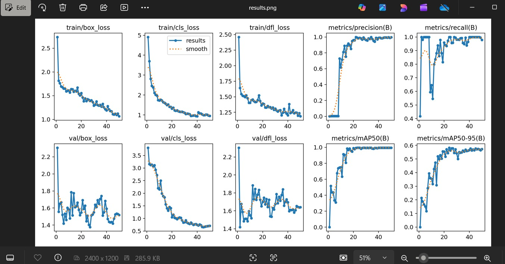
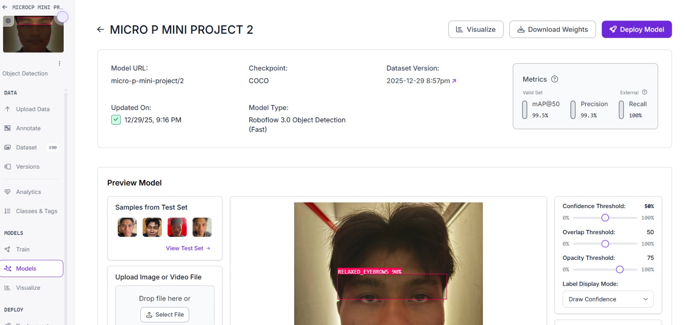

Pain Alert System — Non-Verbal Distress Detection
An end-to-end medical IoT and computer vision solution engineered to detect non-verbal facial pain expressions in paralyzed and non-verbal patients (ALS, severe spinal injuries). Combines an optical ESP32-CAM streaming node with a GPU-accelerated YOLO11n object detection backend, thread-safe buffer clearing, 0.4s state debouncing, and asynchronous HTTP buzzer alert triggers.
1. Live AI Execution & Hardware Demonstration
Real-time inference and hardware testbench running live video processing and active buzzer alerting.

Pain Distress State (Frowned Eyebrow)
Buzzer Active
Inference engine detects eyebrow contraction (FROWNED_EYEBROWS). Upon 2-frame consensus, the system dispatches an asynchronous HTTP request (/buzzer/on) driving GPIO 13 HIGH to sound the physical alarm.

Normal Patient State (Relaxed Eyebrow)
Alarm Muted
Live feed evaluates neutral facial expression (RELAXED_EYEBROWS). The system issues a REST command (/buzzer/off) setting GPIO 13 LOW to maintain a silent monitoring state.

Anti-Glare Optical Housing Prototype
Enclosure HousingCustom-built optical enclosure featuring a matte black exterior hood and red corrugated internal lining. Isolates the ESP32-CAM and active buzzer from ambient room glare to ensure uniform image lighting geometry.

Faculty Exhibition Booth (Table 123)
Live DemoLive prototype deployment at Table 123 during the Faculty of Engineering UPM exhibition. Demonstrating real-time GPU laptop inference paired with tablet telemetry displays and physical optical hardware.
2. Circuit Hardware Architecture & Pinout

Cirkit Designer Pinout & Interconnect
The hardware node integrates an ESP32-CAM MB programmer shield supplying 5V power regulation and micro-USB serial programming capabilities.
- • Power Supply: 5V sourced directly via USB MB shield.
- • Buzzer Control Output: Digital Pin GPIO 13 (
BUZZER_PIN 13) connected to active buzzer signal. - • Camera Sensor: OV2640 module interfaced via internal parallel camera bus.
3. YOLO11n Model Training & Analytics
Fine-tuned YOLO11 Nano (yolo11n.pt) for 50 epochs on Google Colab leveraging an NVIDIA Tesla T4 GPU.

Loss Convergence & Metric Curves (50 Epochs)
Rapid loss decay across bounding box (val/box_loss), classification (val/cls_loss), and distribution focal loss (val/dfl_loss) demonstrating stable model convergence.

Roboflow Model Evaluation Dashboard
Validation results confirm 99.5% mAP@50, 99.3% Precision, and 100.0% Recall on test dataset split.
4. Systems Firmware & Python Backend
Repository Code
# Multi-Threaded Frame Reader & State Debouncing Engine
import threading, time, requests
from ultralytics import YOLO
# Load fine-tuned YOLO11n model with FP16 half-precision on CUDA GPU
model = YOLO("best.pt")
CONFIRM_FRAMES = 2
DEBOUNCE_TIME = 0.4 # Seconds
def send_cmd(endpoint):
"""Non-blocking asynchronous HTTP trigger to ESP32 REST server."""
try:
requests.get(f"http://192.168.137.57:80{endpoint}", timeout=0.7)
except Exception as e:
pass
def process_detection(frown_count, relaxed_count, current_state, last_change_time):
now = time.time()
# Trigger active alarm if frown_count >= 2 and debounced
if frown_count >= CONFIRM_FRAMES and current_state == "OFF" and (now - last_change_time) > DEBOUNCE_TIME:
threading.Thread(target=send_cmd, args=("/buzzer/on",), daemon=True).start()
return "ON", now
# Silence alarm if relaxed_count >= 2 and debounced
elif relaxed_count >= CONFIRM_FRAMES and current_state == "ON" and (now - last_change_time) > DEBOUNCE_TIME:
threading.Thread(target=send_cmd, args=("/buzzer/off",), daemon=True).start()
return "OFF", now
return current_state, last_change_time
// ESP32-CAM Dual Web Server & Active Buzzer Controller
#include "esp_camera.h"
#include <WiFi.h>
#include <WebServer.h>
#define BUZZER_PIN 13
WebServer server(80);
void handleBuzzerOn() {
digitalWrite(BUZZER_PIN, HIGH); // Sound acoustic alarm
server.send(200, "text/plain", "BUZZER_ACTIVE");
}
void handleBuzzerOff() {
digitalWrite(BUZZER_PIN, LOW); // Silence alarm
server.send(200, "text/plain", "BUZZER_MUTED");
}
void setup() {
pinMode(BUZZER_PIN, OUTPUT);
digitalWrite(BUZZER_PIN, LOW);
// Initialize HTTP REST control endpoints on Port 80
server.on("/buzzer/on", HTTP_GET, handleBuzzerOn);
server.on("/buzzer/off", HTTP_GET, handleBuzzerOff);
server.begin();
}